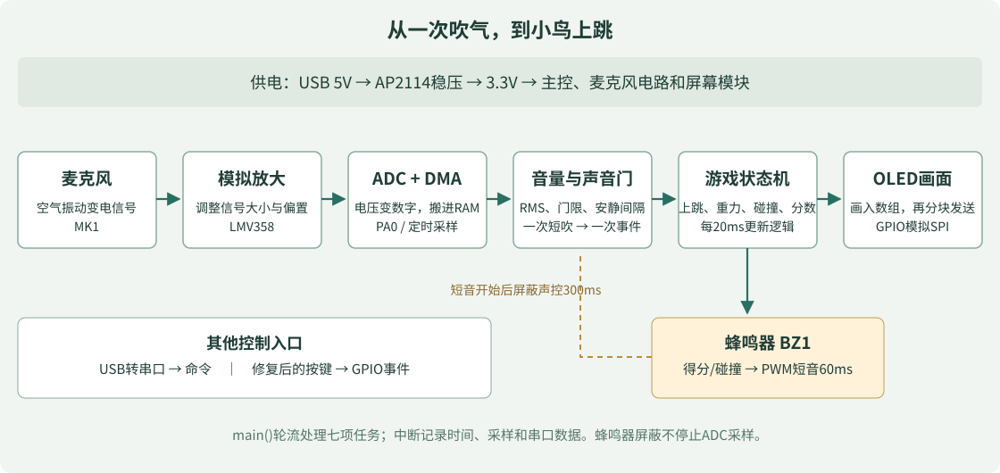

学习与授课入口
- 零基础完整课程：从基础电学到10个实验，贯穿硬件、固件、制造和装配。
- 硬件实物与勘误：先确认主板版本、脚号、电源和按键问题。
- 第一次烧录与游戏操作：先取得可以观察的结果。
- 从main读代码的设计指南：逐段理解已经在板上运行的程序。
- 详细设计与验证记录：学习如何记录设计依据和验证边界。
- 真实黑屏排查过程：看到现象、提出假设、控制变量、留下证据。

建议老师每次课只安排一个可验证的小目标：学生先预测修改后的现象，再动手，最后解释结果。按键硬件返修应由有经验的人处理，学生可以先通过声控和串口完成软件实验。